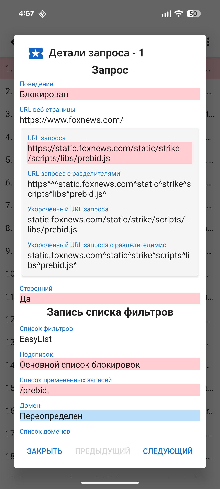
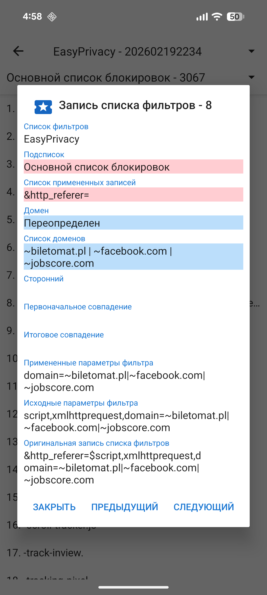

При загрузке веб-страницы обычно выполняется множество дополнительных запросов на ресурсы: CSS, JavaScript, изображения и другие файлы. Информацию об этих запросах можно посмотреть в разделе «Активность запросов». В навигационном меню есть ссылка на активность запросов, а также отображается количество заблокированных запросов. При нажатии на любой запрос отображаются подробные сведения: почему он был разрешен или заблокирован.

Перед загрузкой ресурса веб-страницы он проверяется по включенным спискам фильтров в следующем порядке:
Все списки, кроме первого, основаны на синтаксисе Adblock. UltraPrivacy и UltraList поддерживаются разработчиком Stoutner. Последние три списка взяты из проекта EasyList.
Исходные записи списков фильтров обрабатываются и распределяются по шести вложенным спискам:
Списки «Начальный домен» проверяют совпадение с началом домена — это очень распространенный случай, и выделение их в отдельный подсписок позволяет существенно ускорить проверку (экономия процессорного времени). Списки регулярных выражений используют стандартный синтаксис регулярных выражений.
Содержимое списков фильтров можно посмотреть, выбрав пункт «Списки фильтров» в меню переполнения (три точки в правом верхнем углу) экрана «Активность запросов».

Из-за ограничений Android WebView Privacy Browser использует упрощенную интерпретацию синтаксиса Adblock. Более подробное описание обработки записей фильтров доступно на странице stoutner.com.